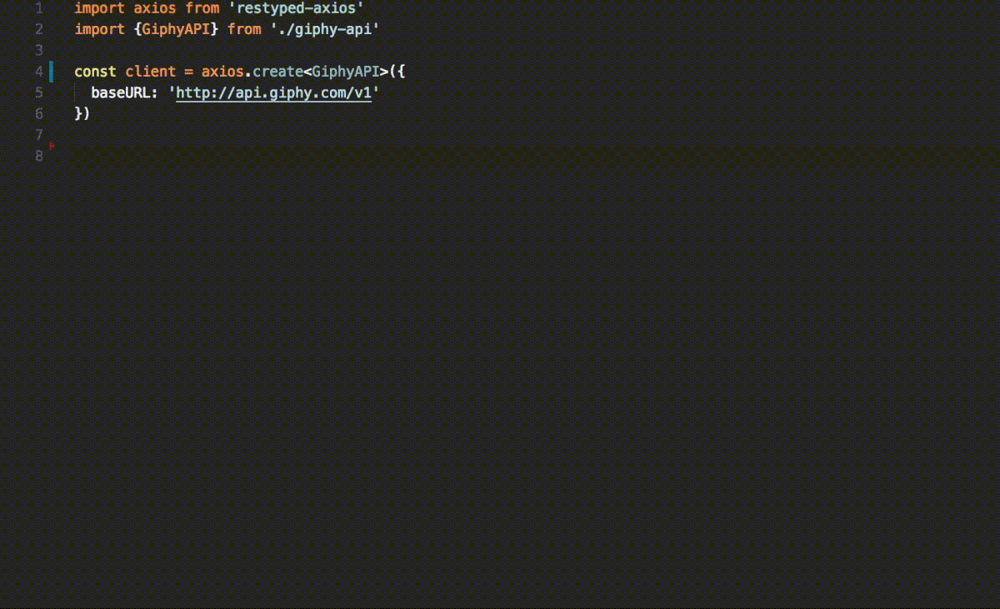

Introducing RESTyped: End-to-end typing for REST APIs with TypeScript
Typescript is a one-way street: Once you start using it, it's hard to go back to plain JS. In fact, you'll probably decide to write your entire application in TypeScript.
After happily typing all of your models, you notice that there's a disconnect: Your types don't make it over the wire! Neither the server or client have any information about what types HTTP requests or responses should be.
RESTyped was designed to bridge the gap by creating an easy way to share types between your API server and any public or private clients.
Strongly typed API calls

In the GIF above we're writing a GET request to the excellent Giphy API using its RESTyped definition. Here are 3 things you may have noticed:
- The editor is auto-suggesting routes available in the API
- The query params are type checked
- The
res.dataobject is automagically typed
Bonus: The API call was made using normal axios syntax.
When you consume an API with a RESTyped definition, you'll save time jumping back and forth between docs and code, and reduce bugs in the process. It's an easier, safer way to consume APIs.
Strongly typed route definitions
If you've written your backend in node.js, you can take advantage of end-to-end typing by creating one RESTyped definition file and sharing it between your server and client.
Currently, RESTyped supports express.js in the form of restyped-express-async. Here's what a route definition looks like:
If your server and client don't exist in the same repo, I recommend keeping the RESTyped definition in your server's repo and publishing it as a npm module with lerna.
How it works
You can use RESTyped by creating or importing a RESTyped definition file and using one of the available library wrappers to declare and call your routes with strong typing.
RESTyped is a creative exploitation of TypeScript's keyof/Lookup Types (introduced in 2.1), Generic Parameter Defaults (introduced in 2.3) and improved generic inference (introduced in 2.4). It's actually very simple, and the best way to grok it is to read the spec, examples and client implementation.
I highly recommend you use Visual Studio Code as your editor for the best experience, as it has the best TypeScript support and auto suggestions available.
Why RESTyped, and why now
I've been writing full-stack apps for over 5 years. As I became enamored with TypeScript, I saw potential for creating a project that would give API development the same seamless experience that TypeScript provides for the rest of an application.
Some of the features I needed to make it happen weren't available in TypeScript, however, and it wasn't until version 2.4 that all the pieces fell into place. That's when I started working on RESTyped.
There are other solutions to build typed APIs out there, like GraphQL, but I don't like the idea of wrangling two separate type systems, and I love the simplicity of REST APIs. RESTyped gives you strong typing for your API without re-architecting your whole API layer or making big compromises.
Who uses this
I use RESTyped to save time building Falcross, the world's largest Picross puzzle community. Habitat uses RESTyped to sync their food delivery API with internal and external clients.
You can also check out the Giphy API definition and use it in your own project!
Further reading
I'm consistently inspired by the cool TypeScript projects and stories I see around the web. Here are a few of my recent favorites:
- TypeChain and Bloom's work to create type-safe Ethereum smart contracts
- This blog post about how Lyft uses TypeScript and their JS-to-TS PropTypes converter library
- Nest.js, a web application framework built in TS with some interesting FP/FRP ideas
Questions, comments, or feedback? I'd love to hear what you think about RESTyped! Hit me up at @rawrmaan or e-mail me at [email protected].
HN discussion: https://news.ycombinator.com/item?id=15934289